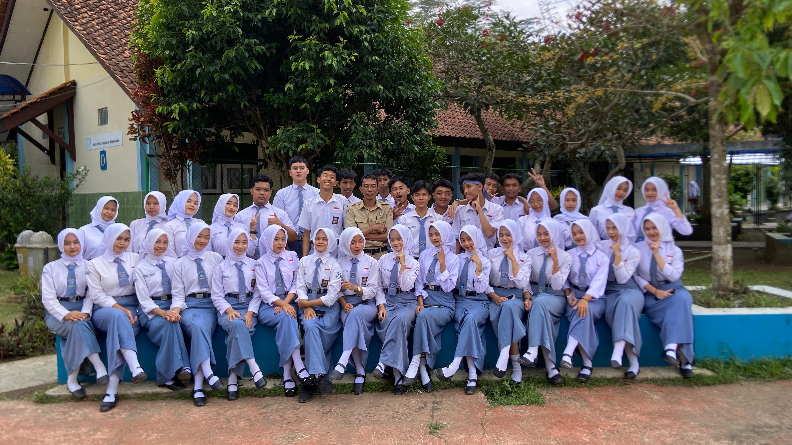

HOME CLASS FUTURISTIC

Visi
Menjadi kelas modern, kreatif, berprestasi, dan berkarakter di era teknologi.
Misi
- Belajar dengan semangat
- Mengutamakan kekompakan
- Mengembangkan bakat digital
- Disiplin dan tanggung jawab